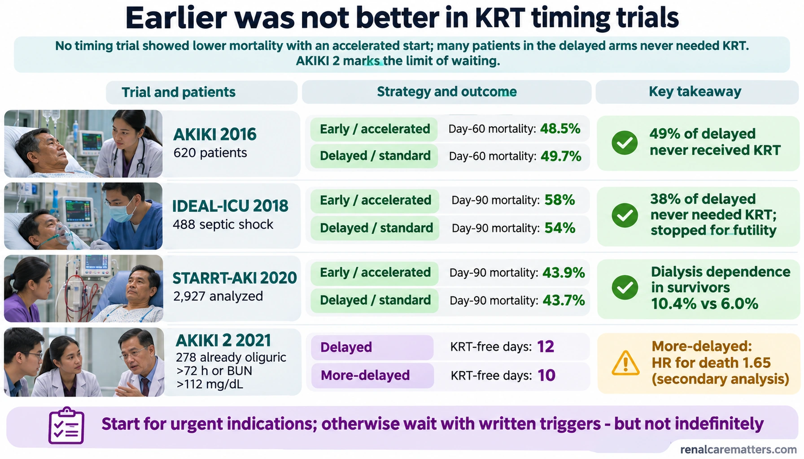
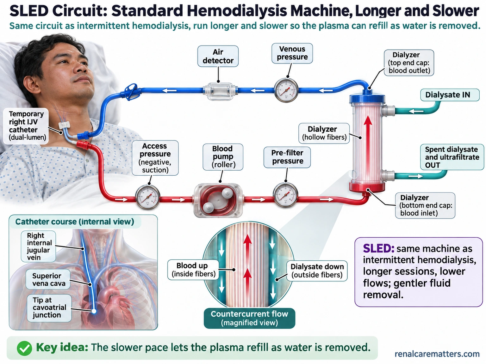

Critical care nephrology and kidney replacement in the ICU
Decide when and how to start kidney replacement in the ICU, with CKRT, SLED or acute PD, and when to stop.
PublishedNailathalaGipatikPepalwal:ReferencesMga SanggunianMga TinubdanReng Reperensya:14Audience: Adult and pediatric nephrology fellows · internal medicine and pediatric residents · medical interns on medicine, pediatrics, ICU and dialysis rotations, and residents who work shifts as dialysis physicians on dutyRead timeOras ng pagbasaOras sa pagbasaOras ning pamamasa:
Training track for nephrology fellows, residents and medical interns
Study material for medical interns, residents and fellows. It explains the reasoning behind common decisions; it is not a protocol and gives no drug doses. Doses, rates and order sets come from current guidelines, product labels, your institution’s approved protocols and your supervising physician. Benefit rules change: confirm them on the date of service. Every case is fictional.
Learning objectives
After this module you should be able to
Intern: Recognize the urgent indications for kidney replacement therapy (KRT) in a ward or intensive care unit (ICU) patient, from potassium, acid-base, fluid and uremia, and escalate at once with a structured report.
Resident: Recognize the urgent and the relative indications for KRT and prepare the patient: venous access, consent, volume and laboratory review, medicine review, and the right bed and machine.
Fellow: Choose the timing, modality (continuous kidney replacement therapy [CKRT], sustained low-efficiency dialysis or prolonged intermittent KRT [sustained low-efficiency dialysis (SLED)/prolonged intermittent renal replacement therapy (PIRRT)], intermittent hemodialysis or acute peritoneal dialysis) and anticoagulation, prescribe the dose the guidelines state, and plan liberation from KRT.
Pre-testBefore you read, answer the 5 self-assessment questions and note your score. After the module, select New set of questions and compare. The difference is what you learned; the questions you still miss are what to reread.
Start here
The big picture, in plain words
Your role · the ICU patient whose kidneys have stoppedThe intern reads the potassium, the blood gas and the urine bag first, and must recognize the five numbers that cannot wait. The resident prepares: a catheter site, a consent, a machine, a bed, a list of what the dialysis will and will not fix. The fellow, with the attending nephrologist, decides whether to start now or wait, which therapy the hospital can actually deliver tonight, how much, with what anticoagulation, and when to stop.
In plain wordsThink of kidney replacement as a rented generator during a power outage. When the main line fails, the generator keeps the lights and the refrigerator running. But it is noisy, it costs money every hour, it needs fuel and a technician, and it can start a fire. You switch it on when the outage threatens something that matters, not at the first flicker, and you switch it off as soon as the main line returns.
The picture has a limit. A generator does not change whether the main line comes back; KRT does not heal the kidney. It replaces part of what the kidney did: it removes potassium, acid, urea and water, and it can remove some toxins. It does not replace the kidney’s endocrine work, it adds its own risks (catheter infection, bleeding, hypotension that can injure a recovering kidney again), and in trials, starting earlier in patients without an urgent need did not save more lives. The decision is therefore a balance: support a failing physiology, without harming the organ you hope will recover.
Physiology sets the urgency. Potassium above the heart’s tolerance stops it. Severe acidemia depresses contractility and blunts the response to vasopressors. Fluid that cannot be excreted floods the lungs. Uremic toxins inflame the pericardium and cloud the brain. Each of these has a medical treatment that buys time; KRT is what you use when that time has run out, or will run out before the kidney returns.
Figure 1 · Key numbers
STARRT-AKI (2,927 analyzed)Death at 90 days 43.9% accelerated vs 43.7% standard; dialysis dependence among survivors 10.4% vs 6.0%
AKIKI (620 patients)49% of the delayed group never received KRT
CKRT dose (KDIGO 2012, 1A)Deliver an effluent volume of 20–25 mL/kg/h
Intermittent or extended KRT (KDIGO 2012, 1A)Deliver a Kt/V of 3.9 per week
Acute peritoneal dialysis (ISPD 2020, 1B)A suitable modality for AKI in all settings
Most critically ill patients with acute kidney injury (AKI) never need dialysis, and many who meet a “failure” stage recover if you wait safely. A few need KRT tonight, and a delay kills them. Your work is to recognize the urgent few, to wait deliberately and watchfully in the rest, to choose the therapy your hospital can deliver well, and to stop it when the kidney comes back.
Opening case · fictional
Case: One machine in Davao
Thursday, 9 p.m., the ICU of a tertiary hospital in Davao City. Mr. Arnel Cabahug, 57, a fish vendor with type 2 diabetes, was admitted two days ago with pneumonia and septic shock. He is intubated and on norepinephrine at a moderate and rising rate. He weighs 70 kg.
His creatinine has risen from 1.1 to 3.9 mg/dL. Urine output has been 10 to 15 mL per hour for the last 14 hours despite fluid. Potassium is 6.3 mmol/L and the electrocardiogram (ECG) shows peaked T waves. Arterial pH is 7.16 with a bicarbonate of 11 mmol/L. His cumulative fluid balance is plus 6.2 liters, oxygen needs are rising, and the chest film shows new bilateral haziness.
The medical intern, Dr. Bea Sarmiento, has already asked the nurse for a repeat potassium and called the resident, Dr. Jerome Lim. The hospital has no CKRT machine and no citrate solution. It has one standard hemodialysis machine on wheels, a portable water system, and a dialysis nurse who can stay until 7 a.m. The nephrology fellow, Dr. Maricel Tan, is on her way.
Before reading on, decide:
Does he need KRT now, and what must be done before the first session?
With one hemodialysis machine and no CKRT, which modality will you choose, and why?
How will you set the dose and anticoagulation, and how will you know when to stop?
Keep your answers in mind. The lesson gives you what you need, and the case review near the end shows one sound response.
Lesson · part 1
When to start: the urgent few and the waiting many
The Kidney Disease: Improving Global Outcomes (KDIGO) 2012 guideline advises starting KRT emergently when life-threatening changes in fluid, electrolyte and acid-base balance exist, and considering the broader clinical context, the conditions that can be modified with KRT and the trends of laboratory tests rather than single urea and creatinine thresholds. Both statements are not graded.1 The old mnemonic AEIOU gives the trainee a checklist of the urgent indications.
Letter
What fails
What you see
Medical bridge while you call
A · Acidosis
The kidney cannot regenerate bicarbonate
Falling pH and bicarbonate, rising vasopressor needs
Treat the cause; ventilator settings with the ICU team
E · Electrolytes
Potassium cannot be excreted
High potassium, ECG changes, arrhythmia
Membrane stabilization and shift per protocol (Module 7)
I · Intoxication
A dialyzable toxin accumulates
Toxic alcohols, lithium, salicylate, some others
Antidote per poison center; KRT per toxicology guidance
O · Overload
Water cannot be excreted
Rising oxygen needs, new infiltrates, positive balance, no response to diuretics
Stop non-essential fluid; diuretic trial if urine is still made
U · Uremia
Uremic toxins accumulate
Pericardial rub, encephalopathy, uremic bleeding
Do not wait for a number
The timing trials
Four large randomized trials asked whether starting KRT early, in patients with severe AKI but no urgent indication, saves lives.
Trial
Patients
Comparison
Main result
AKIKI, 2016
620 ventilated or vasopressor-dependent patients, KDIGO stage 3
Immediate vs delayed until an urgent criterion or oliguria for more than 72 hours
Day-60 mortality 48.5% vs 49.7%; 49% of the delayed group never received KRT; catheter bloodstream infection 10% vs 5%2
Initiating Dialysis Early and Late trial (IDEAL)-ICU, 2018
488 patients with septic shock and failure-stage AKI
Within 12 hours vs after 48 hours if no recovery
Stopped for futility; day-90 mortality 58% vs 54%; 38% of the delayed group never needed KRT; 17% met emergency criteria while waiting3
STARRT-AKI, 2020
3,019 randomized, 2,927 analyzed
Within 12 hours vs standard (start only for conventional indications or AKI lasting more than 72 hours)
Day-90 mortality 43.9% vs 43.7%; dialysis dependence among survivors 10.4% vs 6.0%; adverse events 23.0% vs 16.5%4
AKIKI 2, 2021
278 patients already oliguric for more than 72 hours or with blood urea nitrogen above 112 mg/dL
Start then vs wait longer, until an urgent indication or blood urea nitrogen 140 mg/dL
KRT-free days 12 vs 10 (no difference); in a multivariable analysis, the more-delayed strategy had a hazard ratio for death at day 60 of 1.655

Figure 2. Earlier was not better. No timing trial showed lower mortality with an accelerated start; many patients in the delayed arms never needed KRT. AKIKI 2 marks the limit of waiting.
Read them together. An accelerated start did not lower mortality in any trial. In STARRT-AKI it was associated with more dependence on dialysis among survivors: 4.4 more per 100 survivors, roughly one extra dialysis-dependent survivor for every 23 survivors treated early, and 6.5 more patients per 100 with adverse events.4 Waiting avoided KRT altogether in about two of every five to one of every two patients in the delayed arms.2,3 AKIKI 2 then showed the limit of waiting: once a patient was oliguric for more than 72 hours or had a markedly high blood urea nitrogen, waiting longer gained nothing and, in its secondary analysis, was associated with more deaths.5 That analysis was not the primary outcome and the trial was small, so it is a warning, not a rule.
The practical position: start for an urgent indication; in the rest, wait with a written plan of what you are watching and what will make you start; and do not let “watchful waiting” drift into neglect. The KDIGO 2026 public-review draft also addresses timing, modality, dose and discontinuation, but it is a draft, and its wording should not be charted as a recommendation.6
Philippine reality. In a provincial hospital, the question is often not “when” but “where.” If your hospital cannot dialyze, the decision to transfer must come before the urgent indication, because the transfer itself takes hours and a typhoon can close the road. Waiting safely needs a machine within reach.
Stop and callStop and call the attending nephrologist now, per unit protocol, but always ask the attending nephrologist for guidance:
Potassium with ECG changes, or not falling after the protocol’s first measures
pH falling or vasopressor needs climbing with a severe metabolic acidosis
Rising oxygen needs or new infiltrates with a positive balance and little urine
Pericardial rub, new confusion or seizures in a uremic patient
A suspected dialyzable poisoning
Your hospital cannot start KRT and the patient is moving toward any of the above
RememberStart KRT for the urgent indication, not the creatinine. Everyone else gets a written list of the triggers you are watching, rechecked every shift.
Lesson · part 2
Which modality: what the patient needs and what the hospital has
Every modality moves blood or peritoneal fluid past a membrane and removes solutes by diffusion, convection or both, and water by ultrafiltration. What differs is the speed. Slow therapies remove the same water over more hours, so the plasma refills from the tissues at a pace the circulation tolerates; fast therapies remove it in hours and can drop the blood pressure of a patient on vasopressors, injuring a kidney that was starting to recover.

Figure 3. SLED uses the hospital’s standard hemodialysis machine and the same circuit as intermittent hemodialysis, run longer and slower. The slower pace lets the plasma refill as water is removed.
Modality
How it runs
Strength
Cost and limits in the Philippines
CKRT (continuous hemofiltration, hemodialysis or hemodiafiltration)
24 hours a day on a dedicated machine with bagged fluids
Gentle fluid and solute removal in unstable patients
Machine, filters and fluids often unavailable outside large centers; high cost; needs continuous trained nursing
SLED or PIRRT
Standard hemodialysis machine, run for longer sessions at lower flows
Much of CKRT’s gentleness with equipment most hospitals already own
Needs treated water, a dialysis nurse for the whole session, and a machine not booked for maintenance patients
Intermittent hemodialysis
Standard session of a few hours
Fastest potassium and toxin removal
Hypotension in shock; large fluid shifts
Acute peritoneal dialysis
Catheter in the peritoneum; manual or automated exchanges
No blood circuit, no anticoagulation, no machine needed; gentle
Slower; needs a catheter, sterile technique and solutions; less suited after abdominal surgery
What the guidelines say
KDIGO 2012 advises using continuous and intermittent KRT as complementary therapies (not graded) and suggests CKRT rather than standard intermittent KRT for hemodynamically unstable patients (2B).1 Note the word “standard”: prolonged intermittent therapy was not what that suggestion compared against.
The International Society for Peritoneal Dialysis (ISPD) 2020 adult guideline states that peritoneal dialysis should be considered a suitable modality for AKI in all settings (1B). It recommends flexible catheters where resources and expertise exist (1B), accepts rigid or improvised catheters in resource-poor settings where they may still be life-saving (1C), finds nephrologist-inserted catheters safe and functional in patients without contraindications (1B), and says nephrologists should be trained and permitted to insert them (practice point). In critically ill patients, especially with liver dysfunction and high lactate, it prefers bicarbonate-containing solutions (1B), with lactate solutions as the alternative where bicarbonate is unavailable (practice point).7
The evidence for the “in-between” options
SLED. A German randomized trial assigned 232 surgical ICU patients to 12-hour SLED with a batch system or 24-hour continuous venovenous hemofiltration. Mortality at 90 days was 49.6% with SLED and 55.6% with hemofiltration, a difference that was not significant. Hemodynamic stability did not differ; the SLED group had fewer ventilator days, fewer ICU days, fewer transfusions, less nursing time and lower costs.8 A meta-analysis of 17 studies found no mortality difference between extended daily dialysis and CKRT in its 7 randomized trials (533 patients; relative risk 0.90, 95% confidence interval 0.74 to 1.11), similar kidney recovery and fluid removal, and a lower mortality with extended dialysis only in observational studies, which the authors warned may reflect selection bias.9
Acute peritoneal dialysis. A Brazilian trial randomized 120 patients with acute tubular necrosis to high-volume peritoneal dialysis or daily hemodialysis. Mortality (58% vs 53%) and kidney recovery (28% vs 26%) were similar, and peritoneal dialysis was associated with a shorter time to recovery of kidney function.10 It was one center, and peritoneal dialysis delivered a lower weekly Kt/V, a dose measure that is itself a surrogate. Still, together with the ISPD statement, it supports acute peritoneal dialysis as a real option, not a last resort, where blood-based therapy is unavailable or unsafe.
Philippine practice. In many provinces, SLED on the hospital’s standard hemodialysis machine and acute peritoneal dialysis are the realistic choices for an unstable patient, because CKRT machines, filters, fluids and citrate are unavailable or unaffordable. That is not second-rate care when it is done well. The fellow’s job is to know what the hospital has before the night it is needed: which machine, which water, which nurse, which catheters, which peritoneal solutions.
In childrenChildren need smaller circuits, blood-primed circuits in infants, and weight-based prescriptions, and peritoneal dialysis is often the first choice in infants and in low-resource settings. Fluid overload at the start of CKRT is associated with mortality in pediatric registries. See Attending Pediatric Nephrologist, Module 16.
RememberChoose the modality the patient’s circulation can tolerate and the hospital can deliver all night. A well-run SLED or acute peritoneal dialysis beats a CKRT that stops every few hours.
Lesson · part 3
How much: dose, and why more was not better
The dose of KRT is a measure of small-solute clearance: effluent volume per kilogram per hour for continuous therapy, weekly Kt/V for intermittent or extended therapy. Both are surrogates. They track urea removal, not survival, and two large trials tested whether more of them helps.
Trial
Patients
More intensive
Less intensive
Result
ATN (US Veterans Affairs and National Institutes of Health [VA/NIH]), 2008
1,124 critically ill with AKI and organ failure or sepsis
Intermittent or SLED six times a week; continuous at 35 mL/kg/h
Three times a week; continuous at 20 mL/kg/h
Day-60 mortality 53.6% vs 51.5%; no difference in recovery; more hypotension during intensive intermittent sessions11
RENAL, 2009
1,508 critically ill adults with AKI
Continuous hemodiafiltration at 40 mL/kg/h
25 mL/kg/h
Day-90 mortality 44.7% in both groups; hypophosphatemia 65% vs 54%12
More clearance did not reduce deaths in either trial, and it brought more electrolyte losses and, with intermittent therapy, more hypotension. KDIGO 2012 therefore recommends delivering an effluent volume of 20–25 mL/kg/h for CKRT (1A) and a Kt/V of 3.9 per week for intermittent or extended KRT (1A), noting that achieving the delivered effluent target usually requires prescribing a higher one (not graded).1
Prescribed is not delivered
Filters clot, the circuit stops for scans and procedures, alarms pause the pumps. A prescription that looks correct on paper can deliver much less over 24 hours. Measure what was actually delivered each day: effluent volume collected divided by weight and hours run.
Arithmetic illustration, not a prescription. CKRT dose (mL/kg/h) = total effluent per hour (mL/h) ÷ weight (kg). A 70-kg patient with an effluent of 1,750 mL/h receives 25 mL/kg/h while the circuit runs. If the circuit runs only 18 of 24 hours, the delivered average is about 19 mL/kg/h.
Fluid is a separate decision. Net ultrafiltration, the water removed, is set apart from the solute dose. In a patient on vasopressors, remove it slowly and adjust it to the blood pressure and the tissue perfusion hour by hour, with the ICU team. The site’s CKRT dose, ultrafiltration-rate and flowsheet calculators help you track delivered dose and balance across shifts.
RememberPrescribe the dose the guideline states, measure what was delivered, and set the fluid goal separately, hour by hour.
Lesson · part 4
Keeping the circuit open: citrate, heparin or nothing
Blood that touches plastic and membrane starts to clot. A clotted filter stops treatment and loses the blood inside it. Anticoagulation keeps the circuit open, but systemic anticoagulation in a critically ill patient adds bleeding risk, so the choice is a trade.
Citrate works locally. Infused into the blood as it leaves the patient, it binds ionized calcium, and without calcium the clotting cascade stalls inside the circuit. Much of the citrate-calcium complex is removed by the filter, and calcium is replaced before or after the blood returns, so the patient’s own clotting is largely untouched. The liver normally metabolizes the citrate that reaches the patient; in severe liver failure or deep shock it can accumulate. Heparin works systemically: it protects the filter by anticoagulating the patient.
KDIGO 2012 statement
Grade
For intermittent KRT, use unfractionated or low-molecular-weight heparin rather than other anticoagulants (in patients without increased bleeding risk or contraindication)
1C
For CKRT, use regional citrate anticoagulation rather than heparin in patients without contraindications for citrate
2B
In patients with increased bleeding risk, use regional citrate rather than no anticoagulation during CKRT
2C
In patients with increased bleeding risk, avoid regional heparinization during CKRT
The Regional citrate versus heparin trial (RICH) trial in 26 German centers randomized 638 patients receiving CKRT to regional citrate or systemic heparin; 596 completed it before it was stopped early. Median filter life was 47 hours with citrate and 26 hours with heparin. Mortality at 90 days was 51.2% vs 53.6%, a difference that was not statistically significant. Bleeding complications occurred in 5.1% with citrate and 16.9% with heparin, about 12 fewer bleeds per 100 patients.13 Filter life is a process outcome; the bleeding difference is one patients feel.
No anticoagulation
Where citrate is unavailable and bleeding risk is high, as in leptospirosis with low platelets or dengue, many Philippine units run SLED or intermittent hemodialysis without anticoagulation. Physiology helps the circuit: adequate blood flow, attention to catheter position, and avoiding excessive hemoconcentration in the filter. Expect more clotting, plan for shorter runs, and do not add heparin by reflex when a filter clots in a bleeding patient. Acute peritoneal dialysis needs no anticoagulation at all, which is one more reason to consider it in the bleeding patient.
RememberMatch the anticoagulant to the patient’s bleeding risk and to what your hospital stocks; write the choice and the reason in the order.
Lesson · part 5
Stopping KRT: recognizing the kidney’s return
KRT should stop when it is no longer required (KDIGO 2012, not graded), and KDIGO suggests not using diuretics to enhance recovery of kidney function or to reduce the duration or frequency of KRT (2B).1 Every day on KRT is a day of catheter risk, hypotension risk and cost, so the question “can we stop?” belongs on every round.
The best bedside signal is urine. In a post hoc analysis of an observational study of 1,006 patients treated with CKRT in 54 ICUs in 23 countries, 529 survived initial therapy. Of these, 313 came off CKRT and did not need KRT again for at least 7 days; their hospital mortality was 28.5% compared with 42.7% in those who needed it again. Urine output in the 24 hours before stopping was the strongest predictor of success (area under the curve 0.808), and its predictive value fell when diuretics were being given (0.671 with diuretics vs 0.845 without).14 Spontaneous urine predicts recovery; urine squeezed out by diuretics predicts less.
Figure 4 · Daily liberation check
Is the original indication gonePotassium, acid-base and fluid are controlled; uremic signs have settled; shock is resolving.
Is the patient making urine without helpRising spontaneous urine output over the past 24 hours, before diuretics, is the strongest single signal.
Is the creatinine falling between sessionsFor intermittent therapy, a falling pre-session creatinine or urea suggests the kidney is working.
Step down, then pauseCKRT to SLED to intermittent sessions as the circulation allows; then hold the next session and watch.
Watch for the reboundPotassium, acid-base, volume and urine every shift after the last session. Restart if an urgent indication returns.
Remove the catheter promptlyEvery catheter day is infection risk; plan removal once KRT is no longer expected.
After liberation, the patient has acute kidney disease (AKD), not a healed kidney. Hand them to the follow-up plan in Module 9: discharge creatinine, medicines held, a test within two weeks and a review at three months.
RememberAsk “can we stop KRT today?” on every round, and let spontaneous urine, not diuretic-driven urine, answer it.
On the floor
Real situations: problems and solutions
These are fictional but typical. For each one, cover the answer, decide what you would do, then compare. Where a step depends on local rules, your unit’s procedure and your supervisor’s direction come first.
The creatinine that alarmed the surgeon
What you see
Day 2 after emergency laparotomy in Iloilo, a 61-year-old man has a creatinine of 4.1 mg/dL, up from 1.0. He makes 40 mL of urine an hour, potassium is 4.8 mmol/L, pH 7.33, and his lungs are clear. The surgeon asks for dialysis today.
What is likely going on
Stage 3 AKI by creatinine without an urgent indication; urine is still being made.
What to do
Explain the timing trials, write the triggers you are watching (potassium, pH, oxygen, urine, uremic signs), recheck every shift, and plan access in case.
Why it matters
In STARRT-AKI and AKIKI, starting early without an urgent indication did not save lives and many delayed patients never needed KRT.
The SLED that kept stopping
What you see
In a Cebu ICU, a SLED session on a septic patient without anticoagulation clots twice in four hours. The night resident wants to add heparin. Platelets are 38,000 per microliter and there was fresh blood in the endotracheal tube this morning.
What is likely going on
High bleeding risk; circuit clotting from low flow, catheter problems or hemoconcentration.
What to do
Check catheter position and flow with the nurse, review blood flow and fluid removal with the fellow, accept shorter runs, consider acute peritoneal dialysis; do not add heparin by reflex.
Why it matters
In a bleeding patient, a clotted filter is a nuisance; a bleed can kill.
No dialysis machine after the typhoon
What you see
In a district hospital in Leyte after a typhoon, a 30-year-old man with leptospirosis is anuric with potassium rising. The road to Tacloban is closed and the hospital has no hemodialysis machine.
What is likely going on
Urgent indication with no blood-based therapy available.
What to do
Medical measures for potassium per protocol; call the attending nephrologist; prepare for acute peritoneal dialysis if catheters, solutions and a trained physician are available; arrange evacuation when possible.
Why it matters
ISPD 2020 calls peritoneal dialysis suitable for AKI in all settings (1B), including improvised catheters where they may be life-saving (1C).
The diuretic that fooled the team
What you see
A woman on day 6 of CKRT in Manila passes 900 mL of urine a day, but only after high-dose diuretic. The team plans to stop CKRT tonight.
What is likely going on
Diuretic-driven urine predicts recovery less well than spontaneous urine.
What to do
Suggest a trial off KRT with close monitoring rather than declaring recovery; watch potassium, acid-base and volume every shift; restart if indications return.
Why it matters
In an observational study, urine output predicted successful discontinuation well without diuretics and less well with them.
Field notes
Before your first ICU night, find out where the hospital’s dialysis machine, water system, catheters and peritoneal dialysis solutions are kept, and who can run them at 3 a.m.
Write the KRT triggers you are watching in the progress note, so the next shift knows what “wait” means.
Record delivered dose and hours actually run every morning, not only the prescription.
Put “can we stop KRT?” and “can the catheter come out?” on the daily ICU checklist.
When you call the attending at night, give the potassium with the ECG, the pH with the vasopressor dose, the oxygen need with the fluid balance, and the urine output per hour.
Case review
Back to the case: One machine in Davao
Start now, and prepare. Yes. He has two urgent indications at once: hyperkalemia with ECG changes and pulmonary edema with oliguria in a positive balance, plus a severe metabolic acidemia on rising vasopressors. Dr. Sarmiento was right to repeat the potassium and call at once; the protocol’s membrane stabilization and shift measures bridge the hour it takes to start. Dr. Lim prepares a temporary dialysis catheter, ideally in the right internal jugular vein under ultrasound guidance per KDIGO, obtains consent from the family, reviews the platelets and clotting, lists the antibiotics and other medicines that will need dose review, and confirms that the ICU bed can host the machine and its water supply.
Modality. He is in shock on rising norepinephrine, so a standard four-hour hemodialysis risks hypotension. With no CKRT available, Dr. Tan chooses SLED on the hospital’s standard machine, run longer at lower flows, which gives similar outcomes to CKRT in trials and uses the equipment and nurse the hospital has. If the machine were unavailable or the catheter could not be placed, acute peritoneal dialysis would be the alternative; ISPD 2020 calls it suitable for AKI in all settings (1B). The first session is shaped to the emergency: potassium and acid first, fluid removal slow and titrated to the pressure.
Dose, anticoagulation and stopping. Dr. Tan aims for the KDIGO extended-therapy target of a weekly Kt/V of 3.9 (1A), knowing that more did not help in ATN or RENAL, and records what was delivered. With no citrate and a septic patient whose platelets are falling, she runs the session without anticoagulation, accepting a higher risk of circuit clotting, and writes why. Each day the team asks whether the indications have resolved and whether his urine is returning without diuretics. When spontaneous urine rises and potassium and pH stay controlled between sessions, they hold a session, watch for rebound, then remove the catheter and hand him to post-AKI follow-up.
Interactive case · fictional
Interactive case: Septic shock, one machine, and the question of when
Work through a shift one decision at a time. The panel at the top changes with what you choose. After each choice you see why it is, or is not, the best move; after a weaker one you can try again or carry on and see where it leads. Your first choice at each step is scored. The score stays on this device and nothing is sent anywhere. In real practice, your unit’s protocol and the people responsible for each decision come first.
Skills lab · with your preceptor
Skills checklist: Starting and running KRT in the ICU
Complete with your fellow or attending nephrologist, in the ICU or in simulation. Sign-off is local. Your preceptor rates each step as satisfactory, needs practice, or not observed. Steps marked Critical must all be satisfactory before sign-off. This checklist supports supervised learning; your unit’s own procedure and competency form are the authority. A printable version of every checklist is on the trainer page.
Lists the urgent indications for KRT and the medical bridge for each, and escalates with an Situation, Background, Assessment, Recommendation (SBAR) report
Summarizes AKIKI, IDEAL-ICU, STARRT-AKI and AKIKI 2 in one sentence each, with the absolute differences
Chooses a modality for a given patient and hospital, naming what SLED/PIRRT and acute peritoneal dialysis need to run safely
States the KDIGO dose targets with grades, calculates delivered dose from a flowsheet, and sets the fluid goal separately
Chooses an anticoagulation strategy for a patient with high bleeding risk and documents the reason
Performs a daily liberation check and writes the plan for stepping down, pausing and catheter removal
Placement activity. Intensive care unit, dialysis unit, or simulation laboratory
Self-assessment
Check your understanding
Each visit draws 5 questions at random from this module’s 5-question bank. Choose the single best answer for each, then select Check answers; an explanation appears under the best answer. Select New set of questions for a different mix. A good target is 4 of 5 on two different sets. Nothing you select is sent anywhere; scoring happens in your browser.
Kidney Disease: Improving Global Outcomes (KDIGO) Acute Kidney Injury Work Group. (2012). KDIGO clinical practice guideline for acute kidney injury. Kidney International Supplements, 2(1), 1–138. https://doi.org/10.1038/kisup.2012.1
Gaudry, S., Hajage, D., Schortgen, F., Martin-Lefevre, L., Pons, B., Boulet, E., Boyer, A., Chevrel, G., Lerolle, N., Carpentier, D., de Prost, N., Lautrette, A., Bretagnol, A., Mayaux, J., Nseir, S., Megarbane, B., Thirion, M., Forel, J. M., Maizel, J., ... AKIKI Study Group. (2016). Initiation strategies for renal-replacement therapy in the intensive care unit. The New England Journal of Medicine, 375(2), 122–133. https://doi.org/10.1056/NEJMoa1603017
Barbar, S. D., Clere-Jehl, R., Bourredjem, A., Hernu, R., Montini, F., Bruyère, R., Lebert, C., Bohé, J., Badie, J., Eraldi, J. P., Rigaud, J. P., Levy, B., Siami, S., Louis, G., Bouadma, L., Constantin, J. M., Mercier, E., Klouche, K., du Cheyron, D., ... IDEAL-ICU Trial Investigators and the CRICS TRIGGERSEP Network. (2018). Timing of renal-replacement therapy in patients with acute kidney injury and sepsis. The New England Journal of Medicine, 379(15), 1431–1442. https://doi.org/10.1056/NEJMoa1803213
STARRT-AKI Investigators, Canadian Critical Care Trials Group, Australian and New Zealand Intensive Care Society Clinical Trials Group, United Kingdom Critical Care Research Group, Canadian Nephrology Trials Network, Irish Critical Care Trials Group, Bagshaw, S. M., Wald, R., Adhikari, N. K. J., Bellomo, R., da Costa, B. R., Dreyfuss, D., Du, B., Gallagher, M. P., Gaudry, S., Hoste, E. A., Lamontagne, F., Joannidis, M., Landoni, G., ... Zarbock, A. (2020). Timing of initiation of renal-replacement therapy in acute kidney injury. The New England Journal of Medicine, 383(3), 240–251. https://doi.org/10.1056/NEJMoa2000741
Gaudry, S., Hajage, D., Martin-Lefevre, L., Lebbah, S., Louis, G., Moschietto, S., Titeca-Beauport, D., Combe, B., Pons, B., de Prost, N., Besset, S., Combes, A., Robine, A., Beuzelin, M., Badie, J., Chevrel, G., Bohé, J., Coupez, E., Chudeau, N., … Dreyfuss, D. (2021). Comparison of two delayed strategies for renal replacement therapy initiation for severe acute kidney injury (AKIKI 2): A multicentre, open-label, randomised, controlled trial. The Lancet, 397(10281), 1293–1300. https://doi.org/10.1016/S0140-6736(21)00350-0
Cullis, B., Al-Hwiesh, A., Kilonzo, K., McCulloch, M., Niang, A., Nourse, P., Parapiboon, W., Ponce, D., & Finkelstein, F. O. (2021). ISPD guidelines for peritoneal dialysis in acute kidney injury: 2020 update (adults). Peritoneal Dialysis International, 41(1), 15–31. https://doi.org/10.1177/0896860820970834
Schwenger, V., Weigand, M. A., Hoffmann, O., Dikow, R., Kihm, L. P., Seckinger, J., Miftari, N., Schaier, M., Hofer, S., Haar, C., Nawroth, P. P., Zeier, M., Martin, E., & Morath, C. (2012). Sustained low efficiency dialysis using a single-pass batch system in acute kidney injury: A randomized interventional trial: The REnal Replacement Therapy Study in Intensive Care Unit PatiEnts. Critical Care, 16(4), R140. https://doi.org/10.1186/cc11445
Zhang, L., Yang, J., Eastwood, G. M., Zhu, G., Tanaka, A., & Bellomo, R. (2015). Extended daily dialysis versus continuous renal replacement therapy for acute kidney injury: A meta-analysis. American Journal of Kidney Diseases, 66(2), 322–330. https://doi.org/10.1053/j.ajkd.2015.02.328
Gabriel, D. P., Caramori, J. T., Martim, L. C., Barretti, P., & Balbi, A. L. (2008). High volume peritoneal dialysis vs daily hemodialysis: A randomized, controlled trial in patients with acute kidney injury. Kidney International. Supplement, (108), S87–S93. https://doi.org/10.1038/sj.ki.5002608
VA/NIH Acute Renal Failure Trial Network, Palevsky, P. M., Zhang, J. H., O’Connor, T. Z., Chertow, G. M., Crowley, S. T., Choudhury, D., Finkel, K., Kellum, J. A., Paganini, E., Schein, R. M., Smith, M. W., Swanson, K. M., Thompson, B. T., Vijayan, A., Watnick, S., Star, R. A., & Peduzzi, P. (2008). Intensity of renal support in critically ill patients with acute kidney injury. The New England Journal of Medicine, 359(1), 7–20. https://doi.org/10.1056/NEJMoa0802639
RENAL Replacement Therapy Study Investigators, Bellomo, R., Cass, A., Cole, L., Finfer, S., Gallagher, M., Lo, S., McArthur, C., McGuinness, S., Myburgh, J., Norton, R., Scheinkestel, C., & Su, S. (2009). Intensity of continuous renal-replacement therapy in critically ill patients. The New England Journal of Medicine, 361(17), 1627–1638. https://doi.org/10.1056/NEJMoa0902413
Zarbock, A., Küllmar, M., Kindgen-Milles, D., Wempe, C., Gerss, J., Brandenburger, T., Dimski, T., Tyczynski, B., Jahn, M., Mülling, N., Mehrländer, M., Rosenberger, P., Marx, G., Simon, T. P., Jaschinski, U., Deetjen, P., Putensen, C., Schewe, J. C., Kluge, S., ... RICH Investigators and the Sepnet Trial Group. (2020). Effect of regional citrate anticoagulation vs systemic heparin anticoagulation during continuous kidney replacement therapy on dialysis filter life span and mortality among critically ill patients with acute kidney injury: A randomized clinical trial. JAMA, 324(16), 1629–1639. https://doi.org/10.1001/jama.2020.18618
Uchino, S., Bellomo, R., Morimatsu, H., Morgera, S., Schetz, M., Tan, I., Bouman, C., Macedo, E., Gibney, N., Tolwani, A., Straaten, H. O., Ronco, C., & Kellum, J. A. (2009). Discontinuation of continuous renal replacement therapy: A post hoc analysis of a prospective multicenter observational study. Critical Care Medicine, 37(9), 2576–2582. https://doi.org/10.1097/CCM.0b013e3181a38241
Educational self-study for physicians in training. Clinical tasks need your institution’s authorization and supervision. Completing this track is an Academy learning record only. It does not confer licensure, specialist status, PSN or PNSP membership or board eligibility, procedural privileges, CPD units, or completion of an institutional training program, and it does not replace current guidelines, regulations, your institution’s protocols and formulary, or your supervisor.